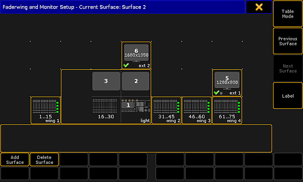
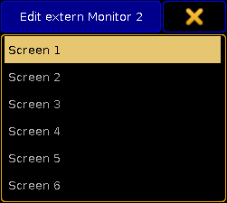
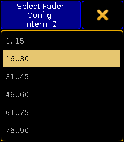
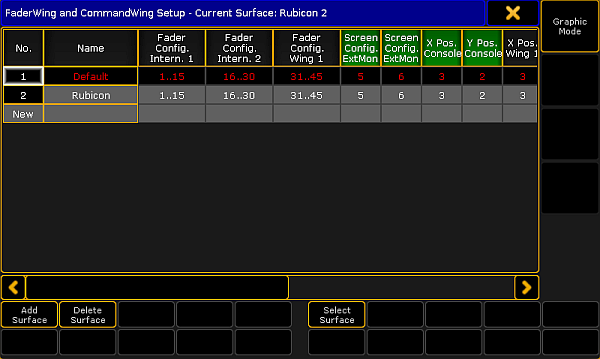

The menu FaderWing and CommandWingSetup opens in the graphic mode.

Display of a current surface in grandMA2 – graphic mode
To remove the write protection and to add a new screen, tap Add Surface.
Assign the internal screen to an external screen:
-Tap and hold an external screen displayed in the menu above.
-A pop-up opens displaying the screens.

Assign a screen to an external screen
-Tap for example Screen 1.
-The internal screen 1 is now assigned to an external screen.
Tap and move an external screen to a favored position in menu.
-If en external screen is moved to the side, using the tracking ball or a mouse moves the cursor to the side.
-If an external screen is moved to the top, using the tracking ball or a mouse moves the cursor to the top.
-When operating a console move an external screen using a wing. Use the encoder of the wing to navigate in the screen.
Configure an internal or external wing:
-Edit the command wing displayed at the bottom of the current surface.
-A pop-up opens displaying the configuration.

Configuration of wings
-Tap to select a wing.
To label the surface, tap Label on the right of the menu.
Change surfaces:
-To return to the previous surface, tap Previous Surface.
-To jump to the next surface, tap Next Surface.
You can also call a surface using the command line. For more information see the Surface keyword.
To delete a surface, tap Delete Surface.
The settings are now applied.
Table Mode
To display the settings in a table, tap Table Mode on the right of the menu.
The menu opens.

Wing & monitor setup – table mode
Add a surface:
-Tap Add Surface or tap and hold the cell New in the column No. or an empty cell in the column Name.
Label the surface:
-After adding a surface, tap the cell Surface.
-A pop-up Edit Name opens.
-Enter the name.
-The surface is now labeled.
Apply a surface:
-Tap Select Surface. The cell you have tapped is now applied.
Edit cells:
-To edit single cells, tap and hold the cell.
-A pop-up opens displaying the wings.
-Tap to select a wing.
-The wing you have selected is now applied.